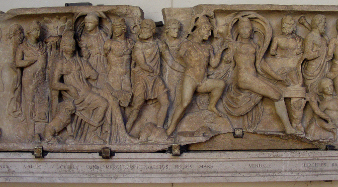
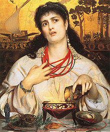
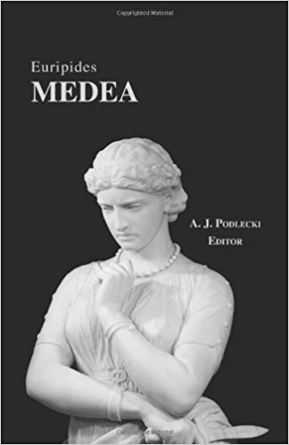

Héroes en la Mitología Clásica
Microcurso de Mitología Clásica
Junio 2017
Héroes en Tebas
En la ciudad de Tebas hay primordialmente dos héroes de especial relevancia:
CADMO
- Hijo de Agénor, rey de Tiro
- Firme en la búsqueda de su hermana Europa
- Logra matar al dragón de Tebas, por lo que Ares le lanzó una maldición
- Plantó los dientes del dragón y brotaron hombres armados
CADMO
- Con cinco de estos hombres fundó la ciudad de Tebas
- Se casó con Harmonía
- Dejó el trono a su nieto Penteo
- Al final de su vida se convierte en inmortal
Si quieres más información sobre la vida de Cadmo y de sus descendenientes, te invitamos a pinchar en este enlace
Esta parte de la historia que acabamos de ver es muy conocida por todos los amantes de la Mitología
En el vídeo de este enlace la encontrarás explicada con todo lujo de detalles.
Imágenes de los héroes tebanos
Cadmo matando al dragón de Tebas

Cadmo con Minerva, mientras nacen hombres de la tierra

Edipo y la Esfinge

Edipo y Antígona

Héroes de Argos
PERSEO
En la diapositiva anterior habéis podido ver en un breve y sencillísimo vídeo la historia de este héroe. Pasemos a ver sus aspectos fundamentales
Mitos relacionados con Perseo
- Muerte de la gorgona Medusa
- Liberación de Andrómeda
- Lucha con el pretendiente de Andrómeda, Fineo
- Fundación de Micenas
- Conversión en constelación
Imágenes del héroe argivo
Perseo con la cabeza de Medusa

Perseo liberando a Andrómeda

Héroes de Tesalia: Ciclo mítico de los Argonautas
El ciclo de los Argonautas es también de gran importancia en la literatura. Podemos encontrarlo narrado en obras de la importancia de las Argonáuticas de Apolonio de Rodas o Medea de Eurípides.
Jasón
Medea
La historia de Medea y sus hijos es de las más conocidas de la mitología clásica. Te invitamos a descubrirla por ti mismo
Medea en pdf